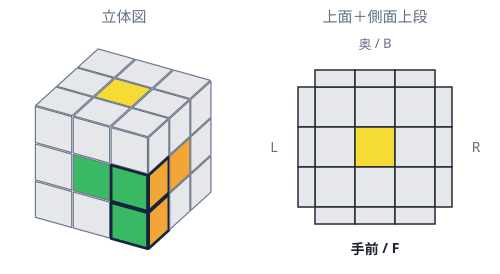

スマホに保存
iPhone：Safariの共有メニュー →「ホーム画面に追加」。Android：ブラウザのメニュー →「アプリをインストール」または「ホーム画面に追加」。
白い十字のあと、2ピースを一緒に入れる
「白・緑・オレンジのコーナー」と「緑・オレンジのエッジ」が1組のペアです。白一面を先に完成させず、ペアを4組入れると下2段がそろいます。
このページでは、白を下・緑を手前・オレンジを右に持ち、右手前の1組を練習します。配置図はペアとセンターだけを色つきで表示しています。
各例は、白の向きとエッジの位置まで初期配置に合わせてください。「上の色が同じ／違う」だけでは手順を選べません。
練習する配置を選ぶ
1 / 6 まずはペアを入れる
ペアを右から入れる
右手前の上にある2ピースがペアです。上の緑どうし、右のオレンジどうしがつながっています。
初期配置まとまり 2
右から入れる
- 2
 R右列 上へ
R右列 上へ - 3
 U′上段 右へ
U′上段 右へ - 4
 R′右列 下へ
R′右列 下へ

右手前の下2段に入りました。白は下を向きます。練習用の初期配置を作る
完成したキューブを、白が下・緑が手前・オレンジが右になるように持ち、次を回します。持ち替えずに上の解説を練習できます。
R U R' U'図で薄いグレーの部分は、実物の色が違っていてもかまいません。
2 / 6 まずはペアを入れる
ペアを手前から入れる
手前の上にある2ピースがペアです。上のオレンジどうし、手前の緑どうしがつながっています。
初期配置練習用の初期配置を作る
完成したキューブを、白が下・緑が手前・オレンジが右になるように持ち、次を回します。持ち替えずに上の解説を練習できます。
F' U' F U図で薄いグレーの部分は、実物の色が違っていてもかまいません。
3 / 6 ペアを作って入れる
白が横・上の色が違う
白は右側。コーナーの上はオレンジ、奥のエッジの上は緑です。この配置なら3手で入ります。
初期配置まとまり 2
2ピースを合わせる
- 2
 U上段 左へ
U上段 左へ
まとまり 3
ペアを下へ戻す
- 3R′右列 下へ
練習用の初期配置を作る
完成したキューブを、白が下・緑が手前・オレンジが右になるように持ち、次を回します。持ち替えずに上の解説を練習できます。
R U' R'図で薄いグレーの部分は、実物の色が違っていてもかまいません。
4 / 6 ペアを作って入れる
白が横・上の色が同じ
白は手前。コーナーも奥のエッジも、上が緑です。まず上段でペアを作ります。
初期配置まとまり 2
挿入位置へ
- 5
 U2上段 左へ
U2上段 左へ
練習用の初期配置を作る
完成したキューブを、白が下・緑が手前・オレンジが右になるように持ち、次を回します。持ち替えずに上の解説を練習できます。
R U R' U2' R U' R' U図で薄いグレーの部分は、実物の色が違っていてもかまいません。
5 / 6 ペアを作って入れる
白が上を向いている
白いコーナーは右手前の上。緑・オレンジのエッジは奥に置き、緑を上にします。
初期配置まとまり 2
挿入位置へ
- 5U上段 左へ
練習用の初期配置を作る
完成したキューブを、白が下・緑が手前・オレンジが右になるように持ち、次を回します。持ち替えずに上の解説を練習できます。
R U R' U' R U2' R' U'図で薄いグレーの部分は、実物の色が違っていてもかまいません。
6 / 6 困ったときの例
コーナーだけ下にある
コーナーは右手前に正しく入り、エッジは手前の上にある例です。一度出して、ペアで入れ直します。
初期配置まとまり 2
挿入位置へ
- 5U′上段 右へ
練習用の初期配置を作る
完成したキューブを、白が下・緑が手前・オレンジが右になるように持ち、次を回します。持ち替えずに上の解説を練習できます。
F' U' F U R U R' U'図で薄いグレーの部分は、実物の色が違っていてもかまいません。
実際のソルブでの練習
- 最初は1組だけF2Lで入れ、残りは今の方法でそろえてもOK。
- 慣れたら、キューブ全体を横に持ち替えて、次の入れたい場所を右手前へ。白は下のままです。次のペアの色は、その場所の2つの側面センターに合わせます。
- すでに入れたペアを壊さないように、次のペアを作って入れます。下の別の場所に埋まったピースは、この6例だけではすべて扱えません。まずは練習用配置で基本の動きを覚えましょう。
- 4組そろったら、今までのOLL・PLLへ進みます。導入直後はタイムより、ペアを見つけて入れられることを目標にします。
一覧へ ↑ F′手前面 反時計回り
F′手前面 反時計回り F手前面 時計回り
F手前面 時計回り